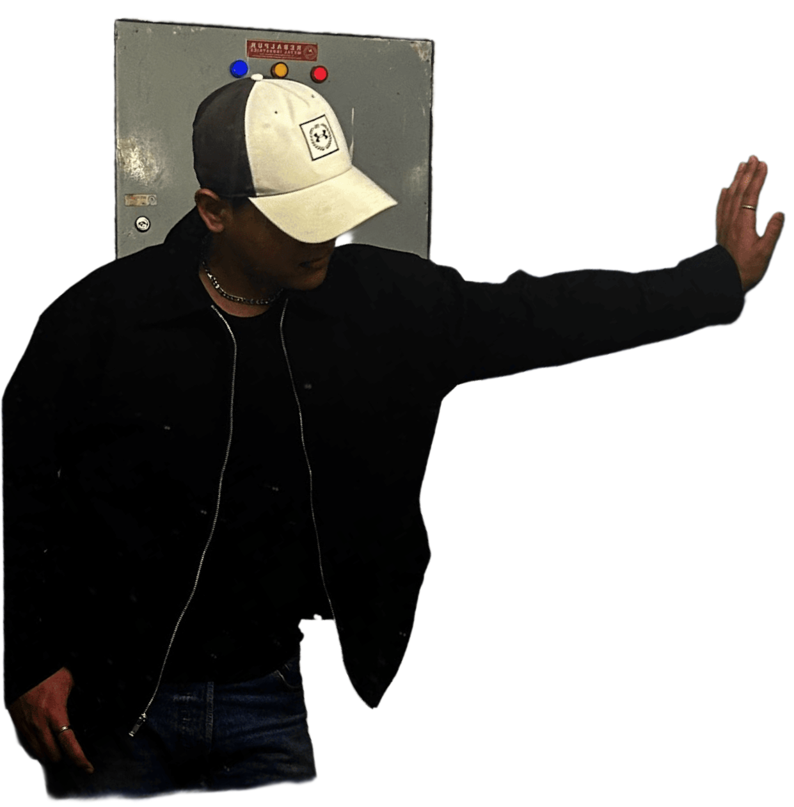
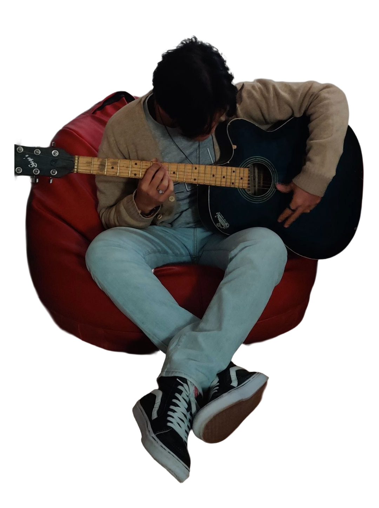

Personality
An ambivert with a secret. Around strangers: reserved, watching, present but contained. Around people I trust: pure Shinchan energy. Loud, dramatic, unfiltered, genuinely chaotic in the best way.
Pseudo human
Born Aug 11, 2003
brohatzeno / Aryan Karki
I am everything and nothing. I am the contradiction that refused to pick a side. Builds things by day. Writes in the margins at night. Shows up anyway, dramatically, fully, for the plot.
Not a resume with better typography
Life is Dramatic. Not performed. Not ironic. A genuine operating philosophy: everything worth doing carries weight, texture, consequence.
This is a place about a whole person. You will find the engineer here: the RAG pipelines, OAuth backends, JSON-driven test frameworks. But you will also find the person who feels things at full volume and processes them in poems. Who stans Choi Yeonjun with the same conviction he brings to debugging a broken webhook.
The human, fully documented

An ambivert with a secret. Around strangers: reserved, watching, present but contained. Around people I trust: pure Shinchan energy. Loud, dramatic, unfiltered, genuinely chaotic in the best way.
Not because he is the coolest. Because he is the most broken. A person navigating a cruel life with no safety net, no universe that cuts him slack, and he keeps going anyway. Not a superpower. A choice.
Attack on Titan first, singular, unmovable. Jojo's Bizarre Adventure. One Piece. Jujutsu Kaisen. Fullmetal Alchemist: Brotherhood. Code Geass. Made in Abyss.
TXT, Stray Kids, Monsta X, ENHYPEN, Seventeen, MAMAMOO, TWICE, NewJeans, LE SSERAFIM, KISS OF LIFE, KATSEYE. Ultimate bias: Choi Yeonjun. No elaboration needed.


November 2025 - May 2026 / Xuno
Built a WhatsApp Business customer support chatbot end-to-end: n8n FAQ bot, Discord POC after the WhatsApp token expired, interactive button flows, PostgreSQL fuzzy keyword matching, then a live multi-agent RAG system serving real users on a verified business number.
Replaced fuzzy matching with Qdrant vector search and cosine-similarity thresholding to eliminate hallucinations. Switched Qwen-3 embeddings at 4096 dimensions to EmbeddingGemma at 768 dimensions. Chose LLaMA 3.1 via Groq API over self-hosting after benchmarking cost and performance.
Built a Selenium + Python test automation framework from zero, evolved into a JSON-driven CLI system using Page Object Model architecture. 24+ configurable assertion and navigation types. 18/21 core cases passing on first release.
Later extended it with an MCP server connected to Claude Desktop, enabling natural language test orchestration through local LLMs via Ollama.
Built a MongoDB CSFLE proof of concept for financial ledger migration with client-side end-to-end encryption and automated dry-run verification.
Implemented OAuth 2.0 with MCP role-based access control: Claude redirects to login, the user authenticates, the backend verifies role, and Claude receives only permitted data. Also configured GitHub-Jira webhook automation for PR and merge movement.
Production pressure / personal canon
LLaMA 3.1 · Groq API · Qdrant · EmbeddingGemma · n8n · PostgreSQL
Live multi-agent AI assistant on WhatsApp Business. Semantic vector search, exchange rate APIs, competitor rates, dynamic FAQ routing, and per-user conversation state. The one I am most proud of.
Python · Selenium · JSON · MCP Server · Ollama · LangGraph
Code-free, extensible test runner. The framework that taught me what scalable actually means.
OAuth 2.0 · MCP Protocol · Flask · Claude Desktop · Cloudflare Tunnels
Role-based access control connecting a secured backend to AI. Science fiction I wrote myself.
MongoDB · Node.js · Python · Encryption Key Vaults
Sensitive fields encrypted throughout: at rest, in transit, on the client.
PHP · MySQL · JavaScript · HTML5 · CSS3 · Bootstrap
The project where it all started. The first thing I built that felt real.
Most of this was learned mid-need
Education / self-taught spine
Sunway College, Birmingham City University · Kathmandu
Machine Learning · Database Systems · Web Technologies · Software Engineering
Southwestern State College · Kathmandu
The next arc
Final frame
The details are not decoration. They are the point. A whole, complicated, dramatic, momo-eating, rain-loving, Yeonjun-stanning, poem-writing, contradiction-embracing person.